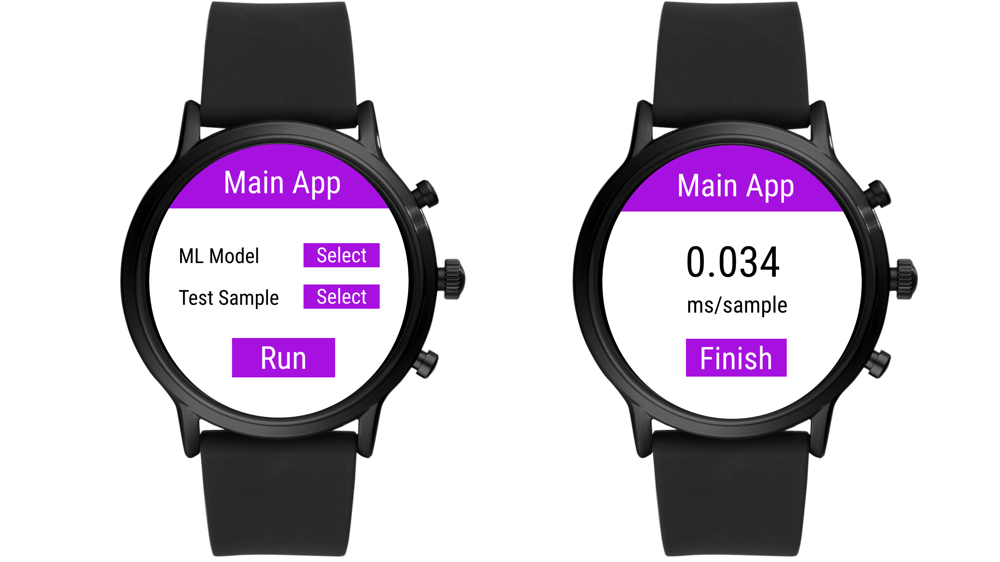
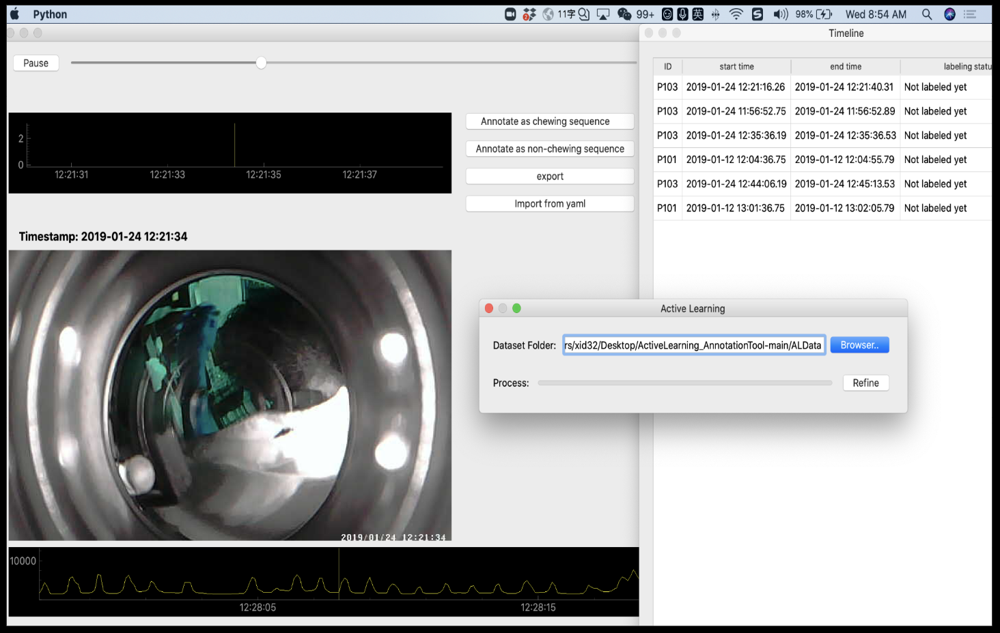
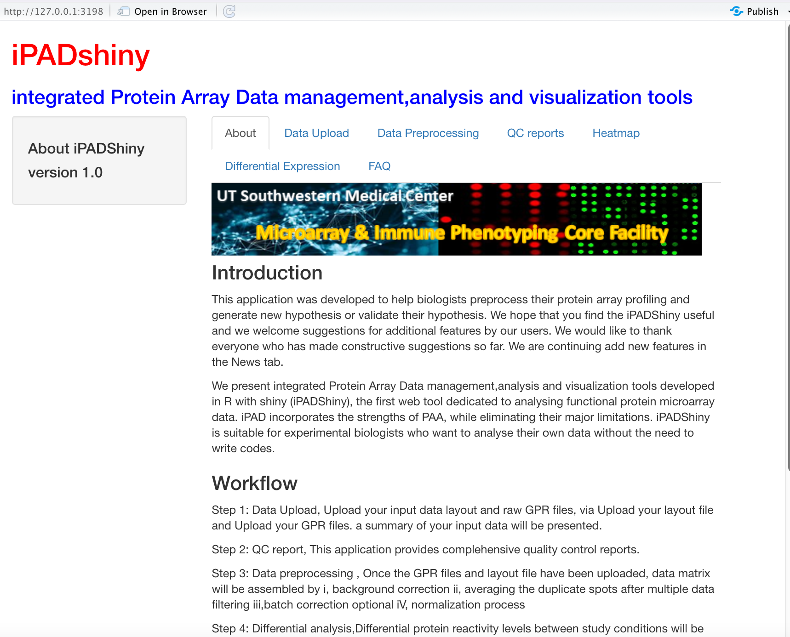
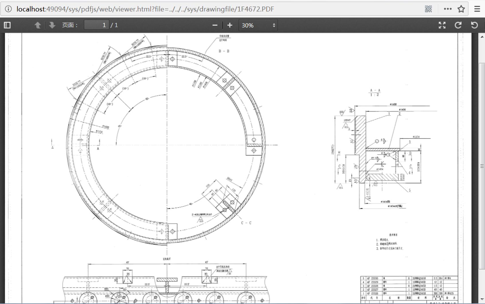
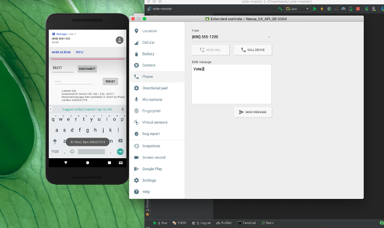
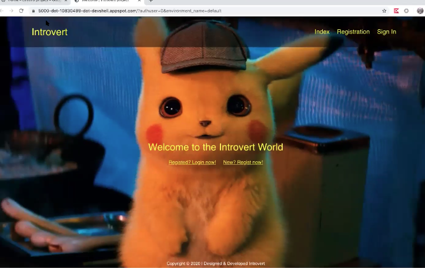

About Me
I am a Ph.D. student at Dartmouth College, advised by Prof. SouYoung Jin. I focus my research on Video Understanding as it has numerous practical applications that can benefit society in various ways. I am excited to carry out advanced research focused on training sophisticated, trustworthy, and high-quality machine learning models that can better interpret and comprehend the visual world.
Prior to Dartmouth, I earned a Master's degree in Computer Science from Northwestern University (2021), advised by Prof. Nabil Alshurafa, and a B.S. degree in Computer Science from the University of Pittsburgh (2020).
Interests
- Video Understanding
- Multi-modal Learning
- Deep Learning
Education
-
Ph.D. in Computer Science, -PresentDartmouth College
-
M.S. in Computer Science, 2021Northwestern University
-
B.S. in Computer Science, 2020University of Pittsburgh
Publications
Selected publications
AV-MaskEnhancer: Enhancing Video Representations through Audio-Visual Masked Autoencoder
Joint work with M. Cheng and S. Cheng
- September, 2023
An End-to-end Energy-efficient Approach for Intake Detection With Low Inference Time Using Wrist-worn Sensor
Joint work with B. Wei, S. Zhang, Q. Xu, Y. Gao and N. Alshurafa
- 16 May, 2023
Building a Cloud-based Energy Storage System through Digital Transformation of Distributed Backup Batteries in Mobile Base Stations
Joint work with S. Ci, Y. Zhou, Y. Xu and J. Wang
- 07 May, 2020
Reach On Waste Classification and Identification by Transfer Learning and Lightweight Neural Network
Joint work with X.Xu and X.Qi
- 23 February, 2020
Projects
Selected Projects
Intake Detection Tool with Multiple Classifiers
- An Android application for wrist-worn devices to detect feeding patterns with low energy consumption and fast inference times. It applied template-based multi-centroid classifier which could provide an end-to-end battery-efficient approach for feeding detection.

Unable to share the code due to concerns regarding privacy or copyright
Interactive Active Learning Annotation Tool
- An interactive annotation software that utilizes active learning to reduce data labeling time and cost. The front-end was created with PyQt5 and pyqtgraph, offering features such as time synchronization and video frame-by-frame rewinding. The back-end, utilizing cv2, sklearn and xgboost, performed data processing, K-means clustering, and clustered entropy active learning.

Unable to share the code due to concerns regarding privacy or copyright
iPADshiny
- iPADshiny(integrated Protein Array Data management,analysis and visualization tools) is a desktop application that simplifies protein analysis for biologists. It integrates multiple algorithms, including the auto-antibody Profiling Analysis, and utilizes state-of-the-art computational methods for efficient and effective analysis.

Unable to share the code due to concerns regarding privacy or copyright
Online Drawing Management System
- An Online Drawing Management System with B/S structure and Windows OS, including features such as notice announcement, navigation menu, user and role management, flexible authorization, and online management and preview of large drawing documents. It automatically loads existing document storage structures, eliminating the need for manual entry of basic information.

Copyright:2018SR071476
Unable to share the code due to concerns regarding privacy or copyright
Remote Voting System
- A remote voting system that uses SMS texts to count unique votes while recording phone numbers to prevent repetitive voting, offering an accessible and transparent solution for remote voting scenarios.

Introvert Chatting Platform
- An inclusive online chat environment for introverted students, utilizing JavaScript, Python, and Google Cloud platform to implement anonymous chatting and user-friendly direct messaging features, aimed at promoting engagement and improving the chat experience for introverted individuals.

Contact